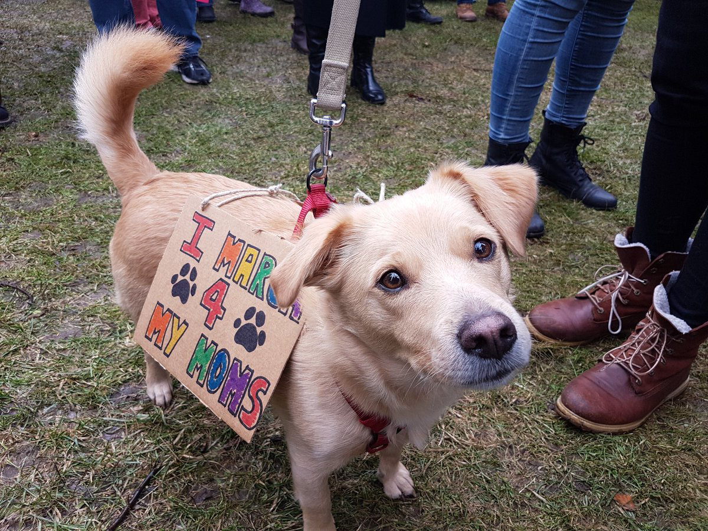
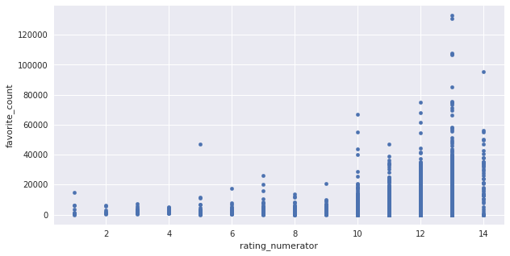
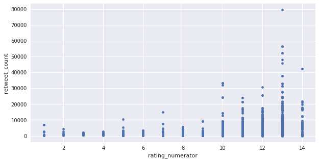
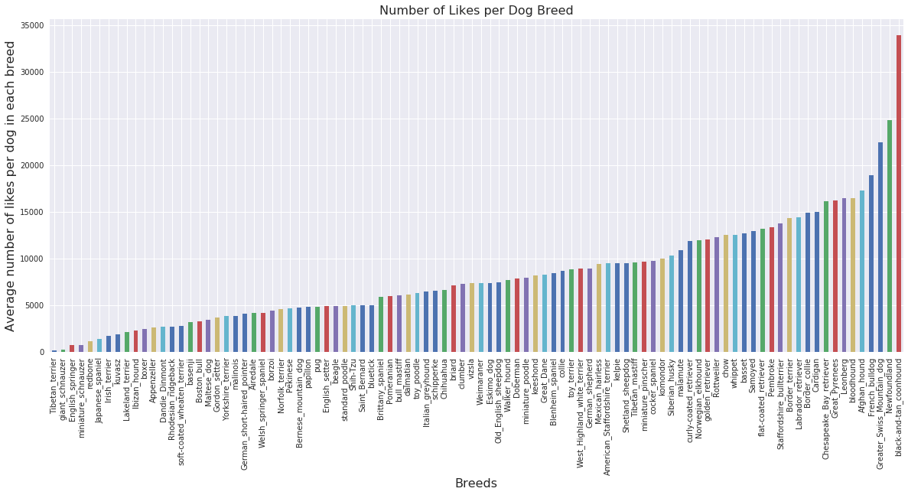

“WeRateDogs” tweets Analysis
In this report, I will be presenting some analysis of a very interesting dataset which is a tweet archive of a Twitter user @dog_rates, with screen name WeRateDogs. Each tweet is about a dog and it includes a rating for that dog. These ratings have a denominator of 10 and a numerator mostly greater than 10.
The Most Liked Tweet
Here's a super supportive puppo participatingin the Toronto
#WomensMarch today. 13/10 https://t.co/nTz3FtorBc

The Most Retweeted Tweet
Here's a doggo realizing you can stand in a pool. 13/10 enlightened
af (vid by Tina Conrad) https://t.co/7wE9LTEXC4
Questions To Be Answered

The above scatter plot shows clear correlation between dog rating numerator and number of likes (favorite count).
Is s there a correlation relationship between dog rating numerator and number of retweets?

The second scatter plot shows clear correlation between dog rating numerator and number of retweets (retweet count). Similar to what we saw in the previous question, tweets with high rating are retweeted more than those with lower rating.
Question #3:
Do people like tweets for certain dog breeds more than other breeds?

For this question I used a dataset which has dog breed predictions for dogs in Twitter WeRateDogs tweet archive. It was produced by a Neural Network algorithm which predict dog breed given a picture of the dog.
I used aggregation to get the number of likes in each breed, I divided the number of likes for each breed by the number of dogs in the breed then I produced a bar chart.
The bar chart clearly shows that people like tweets for certain dog breeds more than other breeds. The dogs that gained the highest number of likes are “Black and Tan Coonhound".